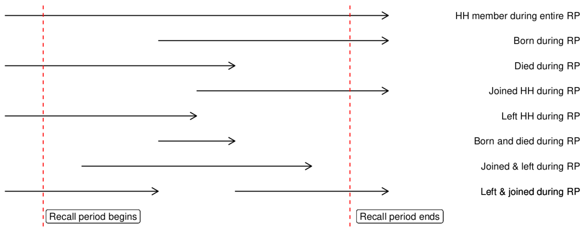

Enquête standardisée sur la mortalité
Objectifs
- Calculer personne-temps à risque
- Utiliser
{srvyr}pour estimer les taux de mortalité
Introduction
Cette session se concentre sur les analyses de base pour une enquête rétrospective sur la mortalité à l’aide du protocole standard de MSF. Nous utiliserons une étude de cas dans laquelle une enquête a été menée à la suite d’une épidémie de choléra en Haïti en 2010.
Cette session suppose que vous avez suivi le parcours d’apprentissage de base pour R et que vous êtes capable de :
- Importer des données
- Effectuer un nettoyage de base à l’aide de
case_when() - Agrégation des données à l’aide de
count()etsummarize()
Si vous avez besoin de revoir ou d’apprendre l’un de ces sujets, veuillez vous reporter aux sessions de base du parcours d’apprentissage.
Configuration
Cette session utilise une étude de cas spécifique. Téléchargez et décompressez le dossier associé, puis ouvrez le script main.R à partir du dossier R :
Le dossier que vous avez téléchargé contient un script R (presque) vide ainsi que des fichiers Excel pour le formulaire Kobo utilisé dans l’enquête et les données collectées avec celui-ci.
Prenez une minute pour ouvrir et examiner le formulaire Kobo et les données brutes. Que contiennent les différents onglets des données brutes ?
Import
Notre ensemble de données comporte deux onglets, le premier contenant les données au niveau des ménages et le second les données individuelles. Pour l’instant, nous nous intéressons principalement aux données individuelles, mais nous aurons finalement besoin des deux. Chargeons tout cela dans R (ainsi que les paquets que nous utiliserons dans la session d’aujourd’hui).
Dans votre script (main.R), ajoutez un en-tête approprié pour le fichier et créez une section qui charge les paquets suivants :
hereriodplyrlubridatesrvyr
Créez ensuite une nouvelle section appelée Import et utilisez rio pour importer la deuxième feuille de votre ensemble de données dans un objet appelé df_raw. Nous n’avons pas besoin de toutes les colonnes de ces données, utilisez select() pour sélectionner uniquement les suivantes :
sexagebornborn_datejoinedjoined_dateleftdieddied_datedied_cause-
_parent_indexrenomméhh
Créez ensuite un deuxième objet appelé df_hh contenant la première feuille de votre ensemble de données en conservant uniquement les colonnes suivantes :
interview_dateclst_id-
_indexrenomméhh presentconsent
Astuce. N’oubliez pas que lorsque vous utilisez select(), vous pouvez rapidement renommer un élément à l’aide d’un =, par exemple : hh = "_parent_index".
Premier aperçu (et recodage)
Super ! Maintenant que nous avons chargé nos données, jetons-y un premier coup d’œil. L’une des premières choses que nous pouvons faire est de vérifier la structure de nos données :
df_raw |>
str()Nous pouvons également vérifier rapidement combien de personnes dans l’ensemble de données sont décédées, car notre enquête porte sur la mortalité :
df_raw |>
count(died)Utilisez count() pour déterminer le nombre de participants par sexe.
Hum, 1 et 2 pour le sexe sont un peu ambigus. Il pourrait être utile de recoder nos données catégorielles afin d’utiliser des étiquettes plus significatives. Par exemple :
df <- df_raw |>
# recodage
mutate(
sexe = case_when(
sexe == 1 ~ "Homme",
sexe == 2 ~ 'Femme`,
.default = NA
)
)Créez une nouvelle section dans votre script intitulée Nettoyage. Cette section comprendra un ‘pipeline de nettoyage’ qui prendra df_raw, effectuera plusieurs étapes de nettoyage et stockera le cadre de données résultant dans un objet appelé ‘df’.
À l’aide de case_when(), créez une nouvelle étape dans votre pipeline de nettoyage qui recode les variables catégorielles de votre ensemble de données. Vous pouvez utiliser le recodage ci-dessus pour sex. Pour les variables born, joined, left et died, utilisez le recodage suivant :
- 0 = Non
- 1 = Oui
- 99 = Inconnu
Pour died_cause, utilisez le recodage suivant :
- 1 = Diarrhée
- 2 = Fièvre
- 3 = Maladie respiratoire
- 4 = Accident
- 5 = Pendant l’accouchement
- 6 = Autre
- 99 = Inconnu
- NA = N’est pas décédé
Les premiers rangs de df devrait ressembler à ceci :
sex age born_date joined_date left_date died_date born joined left died
1 Femme 23 <NA> <NA> <NA> <NA> Non Non Non Non
2 Male 30 <NA> <NA> <NA> <NA> Non Non Non Non
3 Femme 11 <NA> <NA> <NA> <NA> Non Non Non Non
4 Femme 5 <NA> <NA> <NA> <NA> Non Non Non Non
5 Male 1 <NA> <NA> <NA> <NA> Non Non Non Non
6 Femme 19 <NA> <NA> <NA> <NA> Non Non Non Non
died_cause hh
1 N'est pas décédé 1
2 N'est pas décédé 1
3 N'est pas décédé 1
4 N'est pas décédé 1
5 N'est pas décédé 1
6 N'est pas décédé 1Maintenant que nous avons des étiquettes plus claires, explorons un peu plus nos données. Par exemple :
- Combien de personnes sont décédées pour chaque cause potentielle ?
- Observez les combinaisons de
died,left,joinedetborn. Quelles sont les combinaisons les plus courantes ? Cela vous semble-t-il logique ? - Chez qui y’a-t-il plus de décès, les hommes ou les femmes ? Qui était le plus à risque ?
Astuce. N’oubliez pas que vous pouvez attribuer plusieurs noms de colonnes à count() afin de créer des tableaux de contingence.
Nettoyage
Dates en tant que dates (simples)
Terminons le nettoyage de nos données pour l’analyse. Nous devons notamment nous assurer que toutes nos données sont du bon type. Nous avons déjà recodé toutes les variables catégorielles, mais nous n’avons pas encore examiné les dates.
class(df_raw$born_date)[1] "POSIXct" "POSIXt" Il semble que nos dates soient de type POSITct. Convertissons-les en un format de date plus simple à l’aide de ymd() de {lubridate}.
Ajoutez une étape à votre pipeline de nettoyage qui utilise ymd() de {lubridate} pour convertir les dates de born_date, joined_date, left_date et died_date en dates simples.
La classe () de df$born_date devrait désormais être Date :
class(df$born_date)[1] "Date"Correction des problèmes logiques
Un formulaire Kobo bien conçu peut grandement contribuer à garantir la collecte de données de bonne qualité dès le départ. Par exemple, nous pouvons rendre certaines questions obligatoires afin d’éviter les données manquantes. Nous pouvons également créer des ‘contraintes’ qui généreront des messages d’erreur lorsque les données saisies enfreignent les règles prédéfinies ; par exemple, nous pouvons créer une contrainte qui empêche l’enquêteur de saisir une date de décès qui ne correspond pas à la période de rappel.
Ouvrez le fichier Excel de l’enquête Kobo retrospective-mortality_kobo.xlsx et examinez la colonne ‘contrainte’. Quelles sont les contraintes créées dans ce fichier ? Pouvez-vous penser à quelque chose qui n’a pas été pris en compte ?
Malgré toutes les protections que nous avons mises en place dans le processus de collecte, un peu de nettoyage sera toujours nécessaire. Par exemple, bien que nous ayons veillé à ce que toutes les dates se situent dans la période de rappel, nous n’avons pas créé de contrôles pour d’autres relations illogiques entre les dates. Voyons, par exemple, si quelqu’un est né après son décès :
df_raw |>
filter (died_date < born_date)Utilisez filter() pour vérifier s’il y a des cas de personnes qui ont rejoint la famille après leur décès. Combien de fois cela s’est-il produit ?
Le début de votre sortie devrait ressembler à ceci :
sex age born_date joined_date left_date died_date born joined left died
1 1 23 <NA> 2010-12-18 <NA> 2010-12-08 0 1 0 1
died_cause hh
1 1 1524Ce n’est pas terrible. Comment pouvons-nous corriger cela ? La meilleure pratique à adopter ici fait l’objet d’un débat, mais nous vous recommandons de conserver la date de décès et de supprimer la date de naissance/d’adhésion (c’est-à-dire la remplacer par ‘NA’). Sinon, si vous constatez cette erreur pendant la collecte des données, vous pouvez interroger l’enquêteur à ce sujet. Il se peut qu’il s’agisse d’une faute de frappe et qu’il se souvienne des dates exactes. Dans la mesure du possible, essayez d’effectuer ce type de contrôle quotidiennement afin de pouvoir corriger les problèmes en temps réel.
Si nous ne pouvons conserver qu’une seule date, pourquoi privilégier la date de décès ? La date de décès est la variable la plus importante dans le cadre de cette enquête particulière. Il s’agit également d’un événement rare, ce qui signifie que toute date manquante pourrait avoir un impact disproportionné sur les résultats. De plus, on peut supposer que la date de décès est plus fiable que d’autres dates (telles que la date exacte de naissance ou la date d’arrivée/de départ d’une personne dans le foyer).
Dans ce cas précis, il n’y avait que quelques cas de ‘naissance ou entrée dans le foyer après le décès’ sur un ensemble de données de plus de 18 000 personnes, donc supprimer leurs dates de naissance/d’entrée dans le foyer n’est pas très grave. Toutefois, si des erreurs de ce type sont plus fréquentes, cela peut indiquer un problème important dans la conception du formulaire et/ou la formation des enquêteurs. Rechercher rapidement ce type de problèmes (même dans Excel) après la phase pilote et pendant la phase de collecte des données peut vous aider à repérer les problèmes tant que vous avez encore le temps de les corriger.
À l’aide de mutate() et case_when(), ajoutez une étape à votre pipeline de nettoyage pour remplacer les dates de naissance/d’adhésion problématiques par NA. Comment pouvez-vous vérifier si cela a fonctionné correctement ?
Voyez-vous d’autres problèmes dans les données ? J’en vois deux :
- Quelques personnes sont nées pendant la période de rappel, mais ont un âge supérieur à 0
- Une personne est décédée après avoir quitté le foyer
Comment traiteriez-vous ces deux problèmes ? Réfléchissez aux types de problèmes qui ont pu les causer et aux conséquences des différentes stratégies de nettoyage sur vos résultats finaux.
Bonus. Pensez-vous que l’un ou l’autre de ces problèmes aurait pu être évité grâce à une meilleure conception du Kobo ?
Examinons d’abord le problème des personnes nées pendant la période de rappel et dont l’âge est supérieur à 0. La manière de traiter les âges inférieurs à 1 peut être délicate et les enquêteurs doivent être formés de manière explicite pour savoir s’ils doivent ‘arrondir’ ou ‘arrondir à la baisse’. Sinon, les enquêtes modernes ont tendance à demander l’âge en mois pour les personnes en dessous d’une certaine limite (généralement 12, 23 ou 59 mois). Il est particulièrement important d’enregistrer l’âge en mois des jeunes enfants dans les enquêtes qui se concentrent sur des questions telles que la vaccination, la malnutrition ou la mortalité, où les problèmes de santé concernés sont (potentiellement) associés aux nourrissons ou aux enfants de moins de 5 ans. Une contrainte aurait également pu être ajoutée au formulaire Kobo pour éviter ce problème.
Dans le cadre de cette enquête, nous ne disposons d’aucune information sur les mois, donc la meilleure chose à faire est d’imposer une règle cohérente selon laquelle tout âge inférieur à 12 mois doit être enregistré comme 0. Cela signifie que si un enfant est né pendant la période de rappel (qui est une période inférieure à 12 mois), son âge doit être 0.
Ajoutez une étape à votre pipeline qui garantit que toute personne née pendant la période de rappel a un âge de 0. Si vous avez effectué cette opération correctement, vous devriez pouvoir filtrer df pour ne voir que les personnes nées pendant la période de rappel et vérifier que leur âge est 0 :
df |>
filter(born == 'Oui') |>
pull(age) |>
unique()[1] 0Le deuxième problème est un peu plus complexe. Examinons les individus concernés :
df |>
filter(left_date < died_date) sex age born_date joined_date left_date died_date born joined left died
1 Male 25 <NA> <NA> 2010-11-02 2011-03-08 Non Non Oui Oui
2 Female 3 <NA> 2011-01-05 2010-11-20 2011-03-28 Non Oui Oui Oui
3 Female 60 <NA> 2011-03-08 2011-02-15 2011-03-15 Non Oui Oui Oui
died_cause hh
1 Diarrhée 88
2 Diarrhée 236
3 Diarrhée 2861Examinez les trois personnes dans le résultat ci-dessus. Sont-elles toutes problématiques ? Pourquoi ou pourquoi pas ?
Les personnes âgées de 3 et 60 ans ne posent pas de problème, elles ont simplement quitté le foyer puis l’ont réintégré. En revanche, la personne âgée de 25 ans semble avoir quitté le foyer puis être décédée sans jamais y revenir entre-temps. Que devons-nous faire ? Réfléchissons aux raisons pour lesquelles une telle situation pourrait apparaître dans nos données. Il existe deux options principales :
- Peut-être que la personne a réintégré le foyer, mais que le participant a oublié de le mentionner
- Peut-être que le participant n’a pas bien compris que l’enquête ne prendrait en compte que les décès survenus alors que la personne était encore membre du foyer au moment de son décès
Si possible, nous pourrions discuter avec l’enquêteur qui a mené cet entretien afin de déterminer quelle option est la plus probable. En l’absence d’informations supplémentaires, nous devrons probablement opter pour la deuxième option. Si nous faisons cela, nous devrons recoder cette personne comme étant vivante plutôt que décédée, car elle était encore en vie au moment où elle a quitté le ménage.
Ajoutez une étape supplémentaire à votre pipeline qui recode cette personne comme étant vivante, c’est-à-dire : sa valeur ‘décédé’ doit être réinitialisée à ‘Non’ et sa date de décès doit être supprimée. Si vous vérifiez à nouveau les personnes qui ont quitté le foyer avant leur décès, vous ne devriez voir que deux personnes :
sex age born_date joined_date left_date died_date born joined left died
1 Femme 3 <NA> 2011-01-05 2010-11-20 2011-03-28 Non Oui Oui Oui
2 Femme 60 <NA> 2011-03-08 2011-02-15 2011-03-15 Non Oui Oui Oui
died_cause hh
1 Diarrhée 236
2 Diarrhée 2861Remarque. La décision de supprimer un décès de l’ensemble de données est discutable. N’oubliez pas que les décès étant des événements rares, l’ajout ou la suppression d’un décès peut avoir un impact disproportionné sur les calculs de mortalité. Pour minimiser ce type de problème, veillez à consacrer suffisamment de temps à la formation des enquêteurs afin qu’ils comprennent parfaitement les concepts fondamentaux tels que la période de rappel et la notion de ‘ménage continu’. Donner des exemples spécifiques comme celui-ci pendant la formation peut aider les enquêteurs à gérer ces problèmes de manière appropriée lorsqu’ils se présentent pendant la collecte des données.
Joindre les données des ménages
Nos données individuelles semblent correctes, mais elles sont complètement déconnectées de nos données au niveau des ménages (vous vous souvenez de df_hh au début du tutoriel ?). Par exemple, nous aimerions connaître la date de l’entretien associée à chaque individu ainsi que le groupe auquel il appartenait. Pour ce faire, nous devons effectuer une jointure.
Une analyse approfondie des jointures dépasse le cadre de cette session, mais en substance, les jointures sont utilisées pour prendre les données d’un dataframe et les ajouter (ligne par ligne) à un autre dataframe sur la base d’une variable commune aux deux ensembles de données (telle qu’un identifiant). Par exemple, nous voulons ici parcourir ligne par ligne nos données individuelles (df) et ajouter des colonnes contenant les informations relatives au niveau des ménages pour chaque personne (à partir de df_hh). Pour ce faire, nous utiliserons la fonction left_join() de {dplyr} :
df |>
left_join(df_hh) |>
head()Joining with `by = join_by(hh)` sex age born_date joined_date left_date died_date born joined left died
1 Femme 23 <NA> <NA> <NA> <NA> Non Non Non Non
2 Male 30 <NA> <NA> <NA> <NA> Non Non Non Non
3 Femme 11 <NA> <NA> <NA> <NA> Non Non Non Non
4 Femme 5 <NA> <NA> <NA> <NA> Non Non Non Non
5 Male 1 <NA> <NA> <NA> <NA> Non Non Non Non
6 Femme 19 <NA> <NA> <NA> <NA> Non Non Non Non
died_cause hh interview_date clst_id present consent
1 N'est pas décédé 1 2011-03-29 1 1 1
2 N'est pas décédé 1 2011-03-29 1 1 1
3 N'est pas décédé 1 2011-03-29 1 1 1
4 N'est pas décédé 1 2011-03-29 1 1 1
5 N'est pas décédé 1 2011-03-29 1 1 1
6 N'est pas décédé 1 2011-03-29 1 1 1Notez qu’ici, R a utilisé la colonne hh (identifiant du ménage) comme variable commune entre les ensembles de données ; vous pouvez voir un message indiquant cela juste au-dessus de la sortie de head().
Que signifie ‘left’ dans left_join() ? En termes simples, les jointures gauches impliquent un ensemble de données auquel des données sont ajoutées (ensemble de données A) et un autre dont des données sont extraites (ensemble de données B). L’ensemble de données A est l’‘ensemble de données principal’ et le résultat inclura toujours toutes ses lignes. Les lignes de l’ensemble de données B seront conservées si et seulement si left_join() trouve une ligne appropriée dans l’ensemble de données A à laquelle elles peuvent être ajoutées. Dans nos données, par exemple, les lignes de données sur les ménages qui n’avaient aucun membre (et qui n’apparaissent donc pas dans df) ne seront pas incluses dans le résultat de la jointure ci-dessus.
Dans une left_join(), R considérera toujours le premier argument comme l’ensemble de données principal (ensemble de données A) ; c’est-à-dire :
# PSEUDO-CODE
left_join(dataset_a, dataset_b)Ajoutez une dernière étape à votre pipeline de nettoyage qui utilise left_join() pour ajouter les données au niveau des ménages à chacune des lignes de df, puis convertit interview_date pour utiliser un format de date de base (comme vous l’avez fait avec born_date, etc.). Votre pipeline final devrait maintenant effectuer les opérations suivantes :
- Utiliser
df_rawcomme entrée - Recoder les variables catégorielles
- Convertir les dates au format simple a-m-j
- Corriger les problèmes de données illogiques
- Joindre les indicateurs des ménages
Si tout s’est bien passé, l’en-tête de df devrait ressembler à ceci :
head(df) sex age born_date joined_date left_date died_date born joined left died
1 Female 23 <NA> <NA> <NA> <NA> Non Non Non Non
2 Male 30 <NA> <NA> <NA> <NA> Non Non Non Non
3 Female 11 <NA> <NA> <NA> <NA> Non Non Non Non
4 Female 5 <NA> <NA> <NA> <NA> Non Non Non Non
5 Male 1 <NA> <NA> <NA> <NA> Non Non Non Non
6 Female 19 <NA> <NA> <NA> <NA> Non Non Non Non
died_cause hh interview_date clst_id present consent
1 N'est pas décédé 1 2011-03-29 1 1 1
2 N'est pas décédé 1 2011-03-29 1 1 1
3 N'est pas décédé 1 2011-03-29 1 1 1
4 N'est pas décédé 1 2011-03-29 1 1 1
5 N'est pas décédé 1 2011-03-29 1 1 1
6 N'est pas décédé 1 2011-03-29 1 1 1Calculs de mortalité
Une fois le nettoyage et la jonction terminés, nous pouvons enfin passer à la partie amusante, l’analyse. Nous voulons calculer les éléments suivants :
- Taux de mortalité brut
- Taux de mortalité des moins de cinq ans
- Taux de mortalité spécifique à la diarrhée
(Sur papier) Écrivez la formule pour chacun de ces indicateurs. Disposons-nous déjà de toutes les variables nécessaires dans notre ensemble de données pour effectuer les calculs ?
Ces indicateurs sont des taux, ce qui signifie qu’ils nécessitent un dénominateur en temps-personne à risque. Notre ensemble de données ne comporte pas encore de colonne pour cela. Corrigeons cela.
Personne-temps à risque
Pour notre enquête, le temps à risque par personne correspond au temps pendant lequel chaque individu était :
- En vie et
- Membre du ménage
La plupart des personnes étaient en vie et faisaient partie du ménage pendant toute la période de rappel. Pour ces personnes, leur temps à risque correspond à la totalité de la période de rappel. Il existe cependant plusieurs autres options. Par exemple :

La plupart de ces cas peuvent être traités de la même manière, à l’exception du dernier. Prenez une minute pour essayer de trouver sur papier une formule que nous pourrions utiliser pour le temps-personne. Vous gagnerez des points supplémentaires si vous parvenez à la convertir en code.
Il n’est pas facile de trouver une bonne formule ici, alors examinons-la ensemble. Imaginons une personne qui a rejoint le ménage fin 2010 et qui est décédée en février 2011. Si nous insérons les données de cette personne dans un cadre de données, nous pourrions obtenir quelque chose comme ceci :
example <- data.frame(
date_interview = as.Date("2011-04-07"),
born = "Non",
date_born = NA,
joined = "Oui",
date_joined = as.Date("2010-12-08"),
left = "Non",
date_left = NA,
died = "Oui",
date_died = as.Date("2011-02-13")
)
example date_interview born date_born joined date_joined left date_left died
1 2011-04-07 Non NA Oui 2010-12-08 Non NA Oui
date_died
1 2011-02-13Pour calculer la durée d’exposition de cette personne, nous devons déterminer ‘quand sa période d’exposition a commencé’ et ‘quand elle s’est terminée’. Nous calculons ensuite la différence entre ces deux dates. Pour déterminer le début de la période d’exposition d’une personne, nous devons extraire la date à laquelle elle est née/a rejoint le foyer ou (si elle était présente pendant toute la période) la date de début de la période de rappel. Nous pouvons le faire à l’aide de case_when() :
recall_start <- as.Date("2010-10-17")
example |>
mutate(
pt_start = case_when(
born == "Oui" ~ date_born,
joined == "Oui" ~ date_joined,
.default = recall_start
)
) date_interview born date_born joined date_joined left date_left died
1 2011-04-07 Non NA Oui 2010-12-08 Non NA Oui
date_died pt_start
1 2011-02-13 2010-12-08De même, leur période à risque prend fin lorsqu’ils décèdent / quittent l’entreprise ou à la fin du rappel (lorsqu’ils ont été interrogés) :
example |>
mutate(pt_end = case_when(left == "Oui" ~ date_left,
died == "Oui" ~ date_died,
.default = date_interview)) date_interview born date_born joined date_joined left date_left died
1 2011-04-07 Non NA Oui 2010-12-08 Non NA Oui
date_died pt_end
1 2011-02-13 2011-02-13En rassemblant ces informations, nous pouvons alors calculer le temps total passé à risque par une personne comme étant la différence entre la fin et le début de ce temps :
example |>
mutate(
pt_start = case_when(
born == "Oui" ~ date_born,
joined == "Oui" ~ date_joined,
.default = recall_start),
pt_end = case_when(
left == "Oui" ~ date_left,
died == "Oui" ~ date_died,
.default = date_interview),
pt = pt_end - pt_start) date_interview born date_born joined date_joined left date_left died
1 2011-04-07 Non NA Oui 2010-12-08 Non NA Oui
date_died pt_start pt_end pt
1 2011-02-13 2010-12-08 2011-02-13 67 daysCréez une nouvelle section dans votre code intitulée ‘Calculer le temps de personne’ et initialisez un objet appelé ‘recall_start’ avec la date 2010-10-17. Ajoutez un bloc de code adaptant ce qui précède pour créer une colonne ‘pt’ dans ‘df’ qui calcule le temps de personne à risque. L’en-tête de ‘df’ devrait maintenant ressembler à ceci :
sex age born_date joined_date left_date died_date born joined left died
1 Female 23 <NA> <NA> <NA> <NA> Non Non Non Non
2 Male 30 <NA> <NA> <NA> <NA> Non Non Non Non
3 Female 11 <NA> <NA> <NA> <NA> Non Non Non Non
4 Female 5 <NA> <NA> <NA> <NA> Non Non Non Non
5 Male 1 <NA> <NA> <NA> <NA> Non Non Non Non
6 Female 19 <NA> <NA> <NA> <NA> Non Non Non Non
died_cause hh interview_date clst_id present consent pt_start
1 N'est pas décédé 1 2011-03-29 1 1 1 2010-10-17
2 N'est pas décédé 1 2011-03-29 1 1 1 2010-10-17
3 N'est pas décédé 1 2011-03-29 1 1 1 2010-10-17
4 N'est pas décédé 1 2011-03-29 1 1 1 2010-10-17
5 N'est pas décédé 1 2011-03-29 1 1 1 2010-10-17
6 N'est pas décédé 1 2011-03-29 1 1 1 2010-10-17
pt_end pt
1 2011-03-29 163 days
2 2011-03-29 163 days
3 2011-03-29 163 days
4 2011-03-29 163 days
5 2011-03-29 163 days
6 2011-03-29 163 daysUtilisons range() pour examiner les valeurs maximales et minimales de pt :
range(df$pt)Time differences in days
[1] NA NAIl semble que la valeur du temps de risque par personne soit parfois manquante. Cela se produit lorsque, par exemple, une personne est née / a rejoint / a quitté / est décédée, mais que les informations relatives à la date de cet événement sont manquantes. Comment devons-nous traiter cela ? Une option consiste à laisser la valeur manquante, ce qui signifie que cette personne ne contribue pas au temps de risque par personne dans les calculs ultérieurs de la mortalité. Une autre option consiste à nous pouvons prendre la première valeur disponible pour laquelle nous avons une date. Ainsi, par exemple, si nous ne savons pas quand une personne est née, nous utiliserons le début de la période de rappel comme début de son temps de risque.
Quels sont les avantages et les inconvénients de ces deux options ? Comment ajusteriez-vous votre code ci-dessus pour mettre en œuvre la deuxième option ?
La première option réduit artificiellement le dénominateur de nos calculs de mortalité, ce qui entraîne une surestimation de la mortalité. La deuxième option aura l’effet inverse. Pour l’analyse d’aujourd’hui, nous choisirons la première option et laisserons notre code tel quel (valeurs manquantes comprises). Examinons à nouveau notre plage, en ignorant cette fois les valeurs manquantes :
range(df$pt, na.rm = TRUE)Time differences in days
[1] -141 172Nous obtenons maintenant des chiffres, mais il semble que nous ayons des valeurs négatives. Que se passe-t-il ? Repensez à la figure au début de cette section. Si la plupart des cas peuvent être gérés avec notre calcul actuel, celui-ci ne tient pas compte des personnes qui ont quitté puis rejoint le ménage, car ces personnes auront ‘joined_date > left_date’.
Réfléchissez à ces personnes qui quittent puis rejoignent un ménage, ainsi qu’aux dates concernées. Pouvez-vous imaginer une équation pour leur temps de risque individuel ? Comment pensez-vous que cela pourrait être codé ?
Pour ces personnes, au lieu de prendre la différence (entre la fin et le début du temps de risque), nous devons calculer deux tranches de temps (avant leur départ et après leur retour), puis les additionner. Voici comment procéder :
tmp <- df |>
mutate(
pt = case_when(
joined_date > left_date & born == "Oui" ~ (left_date - born_date) + (interview_date - joined_date),
joined_date > left_date ~ (left_date - recall_start) + (interview_date - joined_date),
.default = pt
)
)
range(tmp$pt, na.rm = TRUE)Time differences in days
[1] 0 172Adaptez votre code pipe person-time afin d’inclure cette correction pour les personnes qui ont quitté puis réintégré le foyer. Ajoutez ensuite une ligne pour supprimer les colonnes pt_start et pt_end, car nous ne les utiliserons plus (et elles ne seront pas exactes pour les personnes qui ont quitté puis réintégré le foyer). La tête de df devrait désormais ressembler à ceci :
sex age born_date joined_date left_date died_date born joined left died
1 Female 23 <NA> <NA> <NA> <NA> Non Non Non Non
2 Male 30 <NA> <NA> <NA> <NA> Non Non Non Non
3 Female 11 <NA> <NA> <NA> <NA> Non Non Non Non
4 Female 5 <NA> <NA> <NA> <NA> Non Non Non Non
5 Male 1 <NA> <NA> <NA> <NA> Non Non Non Non
6 Female 19 <NA> <NA> <NA> <NA> Non Non Non Non
died_cause hh interview_date clst_id present consent pt
1 N'est pas décédé 1 2011-03-29 1 1 1 163 days
2 N'est pas décédé 1 2011-03-29 1 1 1 163 days
3 N'est pas décédé 1 2011-03-29 1 1 1 163 days
4 N'est pas décédé 1 2011-03-29 1 1 1 163 days
5 N'est pas décédé 1 2011-03-29 1 1 1 163 days
6 N'est pas décédé 1 2011-03-29 1 1 1 163 daysBonus. Pourquoi notre case_when ci-dessus devait-il comporter un cas distinct pour les personnes nées pendant la période de rappel ?
Parfait, nous sommes presque prêts à calculer la mortalité ! Notez qu’à l’heure actuelle, nos valeurs pour le temps-personne sont représentées sous forme de différence de temps (classe difftime) en nombre de jours. Pour la suite de nos calculs, il serait préférable que ce soit un type numérique simple.
Ajoutez une dernière étape dans votre pipeline de temps-personne qui convertit pt en un type numérique à l’aide de as.numeric().
Calculs de mortalité
Nous sommes (enfin) prêts à calculer les taux de mortalité. Nous pourrions effectuer un calcul de base directement à partir du nombre total de décès et du temps cumulé passé à risque :
sum(df$died == "Oui") / sum(df$pt, na.rm = TRUE) * 10000[1] 0.5405712Comment interpréteriez-vous ce taux de mortalité ? Est-il élevé ?
En 2010, le taux de mortalité de référence en Haïti était de 9 décès pour 1 000 personnes-années. Sachant cela, calculez la surmortalité observée pendant cette épidémie (exprimée en décès supplémentaires pour 10 000 personnes-jours).
Indice. Commencez par convertir le taux de référence en décès pour 10 000 jours-personnes.
Jusqu’ici tout va bien, mais nous n’avons n’avons pas inclus d’intervalles de confiance dans notre calcul et nous n’avons pas non plus pris en compte la conception de notre enquête. Pour ce faire, nous allons utiliser le package {srvyr}. Ce package a été conçu pour l’analyse complexe des données d’enquête et fournit des méthodes statistiques permettant d’ajuster l’effet de conception et la taille finie de la population. Une discussion approfondie de l’effet de conception et de la manière de l’ajuster dépasse le cadre de cette leçon, mais, en substance, les effets de conception apparaissent lorsque nous utilisons un processus d’échantillonnage qui n’est pas entièrement aléatoire . Par exemple, l’utilisation de l’échantillonnage en grappes dans cette enquête crée un effet de conception, car on peut s’attendre à ce que les personnes d’une même grappe soient plus similaires entre elles qu’elles ne le sont par rapport à d’autres personnes sélectionnées au hasard dans la population. Lorsque nous ajustons l’effet de conception, nous élargissons nos intervalles de confiance (nous réduisons notre précision) afin de tenir compte de cette similitude non aléatoire.
Pour effectuer ces ajustements, {srvyr} a besoin de connaître quelques informations :
- L’identifiant des unités d’échantillonnage nécessitant un ajustement (dans ce cas, les identifiants des grappes)
- La taille de la population (nécessaire pour résoudre à la fois l’effet de conception et tenir compte de la taille finie de la population)
- Le poids de chaque grappe
Le poids de la grappe est le produit de deux fractions :
- Taille totale de la population / taille de l’échantillon et
- Cluster attendu / taille réelle du cluster donné
En principe, chacun de nos clusters aurait dû compter 32 ménages. Dans la pratique, la taille réelle des clusters a pu s’écarter dans certains cas. Nous pouvons utiliser la fonction n_distinct() dans summarize() pour ajouter une colonne avec la taille réelle du cluster associé à chaque individu :
df |>
summarize(.by = clst_id,
hh_count = n_distinct(hh)) |>
head() clst_id hh_count
1 1 32
2 2 32
3 3 32
4 4 32
5 5 32
6 6 32Créez une nouvelle section de votre code intitulée ‘Calculer la mortalité’. Écrivez une pipeline qui utilise l’instruction summarize ci-dessus pour calculer le nombre de ménages observés par cluster, puis utilisez mutate() pour ajouter les colonnes weight et pop contenant respectivement les poids et la taille totale de la population (en 2010, celle-ci était de 228 425 personnes). Stockez la sortie de ce pipeline dans un objet appelé df_wt. La tête de df_wt devrait ressembler à ceci :
clst_id hh_count weight pop
1 1 32 12.38546 228425
2 2 32 12.38546 228425
3 3 32 12.38546 228425
4 4 32 12.38546 228425
5 5 32 12.38546 228425
6 6 32 12.38546 228425Astuce. La formule pour weight est (population_size / sample_size) * (32 / hh_count).
Maintenant, utilisez left_join() pour joindre les données de poids et de population nouvellement créées à df. La tête de df devrait maintenant ressembler à ceci :
Joining with `by = join_by(clst_id)` sex age born_date joined_date left_date died_date born joined left died
1 Female 23 <NA> <NA> <NA> <NA> Non Non Non Non
2 Male 30 <NA> <NA> <NA> <NA> Non Non Non Non
3 Female 11 <NA> <NA> <NA> <NA> Non Non Non Non
4 Female 5 <NA> <NA> <NA> <NA> Non Non Non Non
5 Male 1 <NA> <NA> <NA> <NA> Non Non Non Non
6 Female 19 <NA> <NA> <NA> <NA> Non Non Non Non
died_cause hh interview_date clst_id present consent pt hh_count
1 N'est pas décédé 1 2011-03-29 1 1 1 163 32
2 N'est pas décédé 1 2011-03-29 1 1 1 163 32
3 N'est pas décédé 1 2011-03-29 1 1 1 163 32
4 N'est pas décédé 1 2011-03-29 1 1 1 163 32
5 N'est pas décédé 1 2011-03-29 1 1 1 163 32
6 N'est pas décédé 1 2011-03-29 1 1 1 163 32
weight pop
1 12.38546 228425
2 12.38546 228425
3 12.38546 228425
4 12.38546 228425
5 12.38546 228425
6 12.38546 228425Pour que {srvyr} utilise nos variables nouvellement ajoutées et effectue des calculs, nous devons créer un ‘objet d’enquête’. Il s’agit d’une classe spéciale de dataframe spécifique à {srvyr} et créée à l’aide de la fonction as_survey_design() :
tmp <- df |>
as_survey_design(
ids = clst_id,
wt = weight,
fpc = pop
)Essayez d’exécuter le code ci-dessus. Quelle est la classe de tmp ? Cet objet se comporte-t-il comme un cadre de données normal ? Essayez d’effectuer quelques manipulations de base, par exemple :
- Extrayez les données de la colonne
age - Filtrez pour ne voir que les personnes décédées
Comme vous pouvez le constater, une fois que nous avons appliqué as_survey_design(), nous n’avons plus de dataframe normal. Nous devons donc stocker son résultat dans un objet séparé, par exemple tmp ou df_srvy. Cela garantit que df reste un dataframe standard disponible pour d’autres calculs, visualisations, etc.
{srvyr} offre un certain nombre de fonctions permettant de calculer des indicateurs à partir des données d’enquête, la plupart du temps utilisées à l’intérieur d’une fonction summarize(). Dans notre cas, nous utiliserons la fonction survey_ratio() pour calculer les taux de mortalité bruts et spécifiques. La syntaxe de base de survey_ratio() est assez simple. Par exemple, nous pouvons utiliser ce qui suit pour calculer le taux de mortalité brut :
df |>
as_survey_design(
ids = clst_id,
wt = weight,
fpc = pop) |>
summarize(
cmr = survey_ratio(
numerator = (died == "Oui") * 10000,
denominator = pt,
vartype = "ci",
deff = TRUE,
na.rm = TRUE
)
)C’est assez simple, mais analysons les arguments :
-
numeratorest le numérateur de notre ratio, dans ce cas le nombre de personnes décédées (individus pour lesquelsdiedétait"Oui") multiplié par 10 000 (pour obtenir un résultat final en 10 000 jours-personnes) -
denominatorest le dénominateur de notre ratio, dans ce cas le nombre de personnes-jours à risque (pt) -
vartypetoute variable que nous voulons inclure pour estimer l’erreur, ici nous avons choisi l’intervalle de confiance ("ci") mais nous pourrions également demander l’erreur type ("se") -
deffindique si nous voulons inclure une estimation de l’effet de conception -
na.rmindique si{srvyr}doit ignorer les valeurs manquantes lors du calcul
Le résultat de ce code est un nouveau cadre de données avec notre estimation ponctuelle (cmr), l’intervalle de confiance (cmr_low et cmr_upp) et l’effet de conception associé.
Dans l’exemple ci-dessus, nous avons calculé la mortalité brute. Comme cette enquête est associée à une épidémie particulière (de choléra), nous pourrions également nous intéresser à la mortalité spécifique à la maladie attribuable à la diarrhée. En utilisant le code de mortalité brute comme modèle, écrivez un code pour calculer le taux de mortalité spécifique à la diarrhée. Vous devriez obtenir les résultats suivants :
# A tibble: 1 × 4
dsmr dsmr_low dsmr_upp dsmr_deff
<dbl> <dbl> <dbl> <dbl>
1 0.369 0.257 0.482 2.64Nous souhaitons également calculer le taux de mortalité des moins de 5 ans. Dans ce cas, nous calculons la mortalité brute sur le sous-ensemble de notre population âgé de moins de 5 ans, c’est-à-dire que nous devons filtrer notre cadre de données pour ne conserver que les enfants de moins de 5 ans. Écrivez du code pour calculer la mortalité des moins de 5 ans, en gardant à l’esprit que vous devrez filtrer avant de créer votre objet de conception d’enquête. Vous devriez obtenir le résultat suivant :
# A tibble: 1 × 4
u5mr u5mr_low u5mr_upp u5mr_deff
<dbl> <dbl> <dbl> <dbl>
1 0.677 0.363 0.990 1.14Comment interpréteriez-vous tous les taux de mortalité ci-dessus ? Prenez une minute pour décrire comment vous pourriez présenter ces résultats. Y a-t-il d’autres indicateurs que vous aimeriez calculer pour une analyse plus complète ?
C’est terminé !
Bravo, vous avez maintenant appris à importer, nettoyer et calculer les taux de mortalité à partir de données d’enquête de base sur la mortalité.
Aller plus loin
Exercices supplémentaires
Précédemment, nous avons calculé le taux de mortalité excédentaire, c’est-à-dire la différence entre la mortalité observée et la mortalité de référence. Un autre indicateur que nous présentons souvent est le nombre de décès excédentaires observés pendant la période de rappel. Comment le calculeriez-vous ?
Utilisez
{ggplot2}pour créer un graphique à barres représentant les décès au fil du temps.Consultez la documentation relative à
{srvyr}et voyez si vous pouvez utilisersurvey_mean()pour calculer la mortalité proportionnelle par cause de décès.Utilisez
{gt}pour créer un tableau attrayant présentant les données de mortalité proportionnelle que vous avez générées ci-dessus.Dans la section consacrée au nettoyage, nous avons corrigé les cas où une personne était née pendant la période de rappel mais avait un âge > 0. Comment cela aurait-il pu être évité avec une contrainte Kobo ?